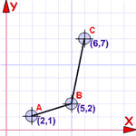
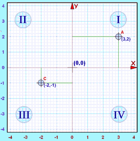

Cartesian Coordinates
Cartesian coordinates can be used to pinpoint where we are on a map or graph.
Cartesian Coordinates
Using Cartesian Coordinates we mark a point on a graph by how far along and how far up it is:
 |
| The point (12,5) is 12 units along, and 5 units up. |

They are also called Rectangular Coordinates because it is like we are forming a rectangle.
X and Y Axis
| The horizontal (left-right) direction is commonly called X. | |
| The vertical (up-down) direction is commonly called Y. |
Put them together on a graph ...
 ... and we are ready to go
... and we are ready to goThe Origin
The point where the X-axis and Y-axis cross is called the "Origin" (0,0), and all measurements are made from that point.
- The X axis runs horizontally through zero
- The Y axis runs vertically through zero
It is sometimes given the letter "O".
Axis: The reference line from which distances are measured.
The plural of axis is axes, pronounced ax-eez
Example:

Point (6,4) is
- 6 units across (in the x direction), and
- 4 units up (in the y direction)
So (6,4) means:
Go along 6, and then go up 4, then "plot the dot".
And you can remember which axis is which by:
x is A CROSS, so x is ACROSS the page.
 |
Play With It !Now is a good time to play with Interactive Cartesian Coordinates to see for yourself how it all works. |
Like 2 Number Lines Put Together
It is like we put two Number Lines together, one going left-right, and the other going down-up.

Direction
|
As x increases, the point moves further right. |
|
|
As y increases, the point moves further up. |
Writing Coordinates
The coordinates are always written in a certain order:
- the horizontal distance first,
- then the vertical distance
This is called an "ordered pair" (a pair of numbers in a special order)
And usually the numbers are separated by a comma, and parentheses are put around the whole thing like this:
(3,2)
Example: (3,2) means 3 units right and 2 units up
Example: (0,5) means 0 units right and 5 units up.
In other words, only 5 units up.
Example: (2,−6) means 2 units right and 6 units down.

x before y: Always go along before you go up or down!
Think of walking into an elevator first before going to your floor.
Abscissa and Ordinate
You may hear the words "Abscissa" and "Ordinate" ... they are just the x and y values:
- Abscissa: the horizontal ("x") value in a pair of coordinates: how far along the point is
- Ordinate: the vertical ("y") value in a pair of coordinates: how far up or down the point is
"Cartesian" ... ?
They are called Cartesian because the idea was developed by the mathematician and philosopher Rene Descartes who was also known as Cartesius.
He is famous for saying "I think, therefore I am".
What About Negative Values of X and Y?
Just like with the Number Line, we can also have negative values.
Negative: start at zero and head in the opposite direction:
- Negative x goes left
- Negative y goes down
 |
So, for a negative number:
|
Four Quadrants
When we include negative values, the x and y axes divide the space up into 4 pieces:
Quadrants I, II, III and IV
They are numbered in a counterclockwise direction:

In Quadrant I both x and y are positive, but ...
- in Quadrant II x is negative (y is still positive),
- in Quadrant III both x and y are negative, and
- in Quadrant IV x is positive again, while y is negative
Like this:
 |
|
Example: The point "A" (3,2) is 3 units along, and 2 units up.
Both x and y are positive, so that point is in "Quadrant I"
Example: The point "C" (-2,-1) is 2 units along in the negative direction, and 1 unit down (i.e. negative direction).
Both x and y are negative, so that point is in "Quadrant III"
Dimensions: 1, 2, 3 and more ...
Think about this:
| 1 |
The Number Line can only go:
so any position needs just one number |
|---|---|
| 2 |
Cartesian coordinates can go:
so any position needs two numbers |
| 3 |
How do we locate a spot in the real world (such as the tip of your nose)? We need to know:
that's three numbers, or 3 dimensions! |
3 Dimensions
Cartesian coordinates can be used for locating points in 3 dimensions as in this example:
 |
| Here the point (2, 4, 5) is shown in three-dimensional Cartesian coordinates. |
In fact, this idea can be continued into four dimensions and more (I just can't work out how to illustrate that nicely for you!)